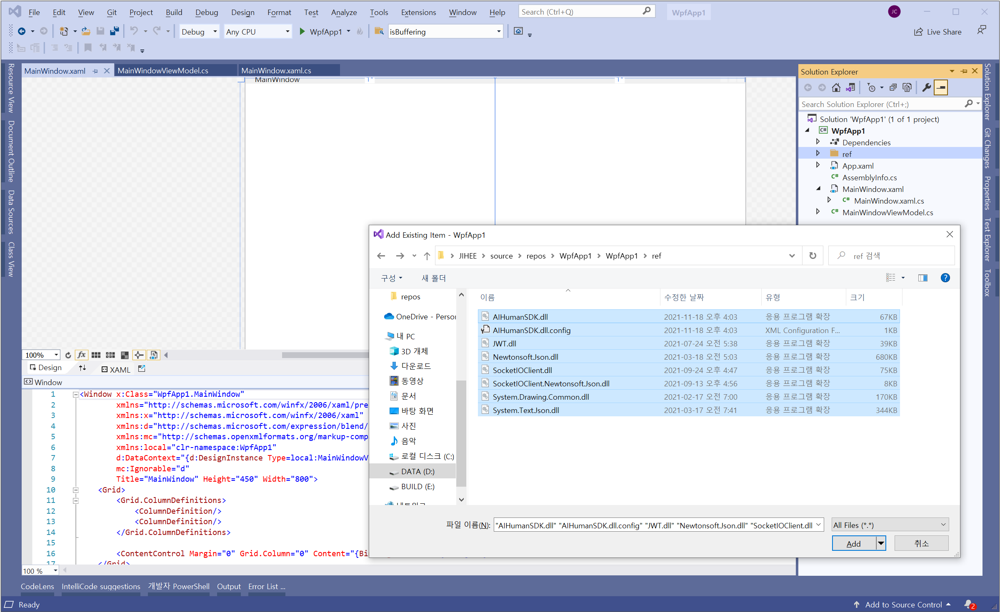
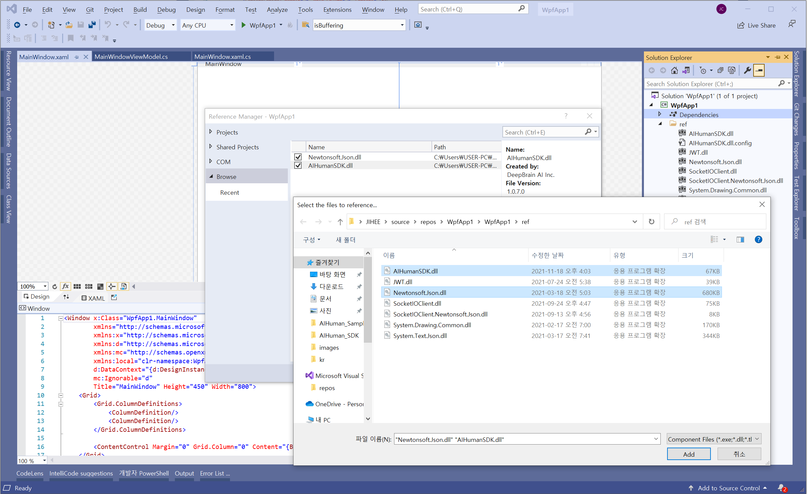
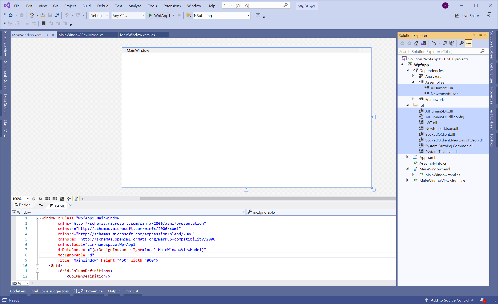
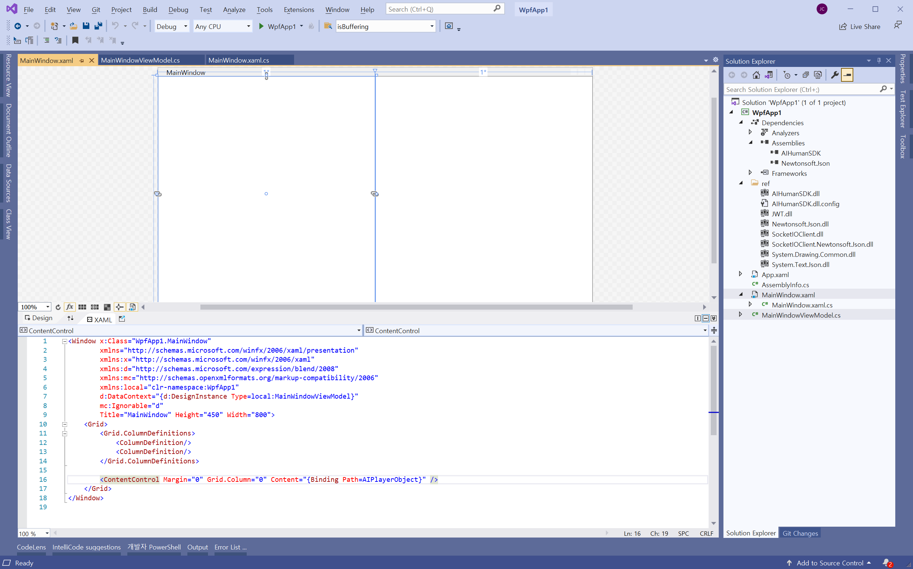
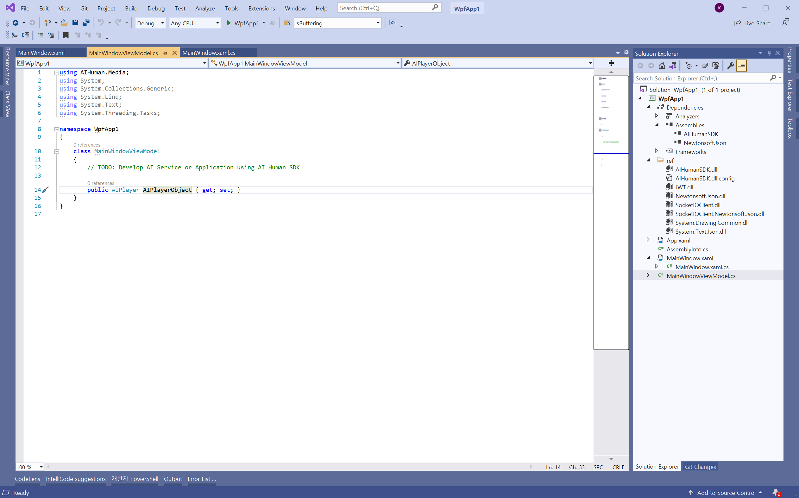
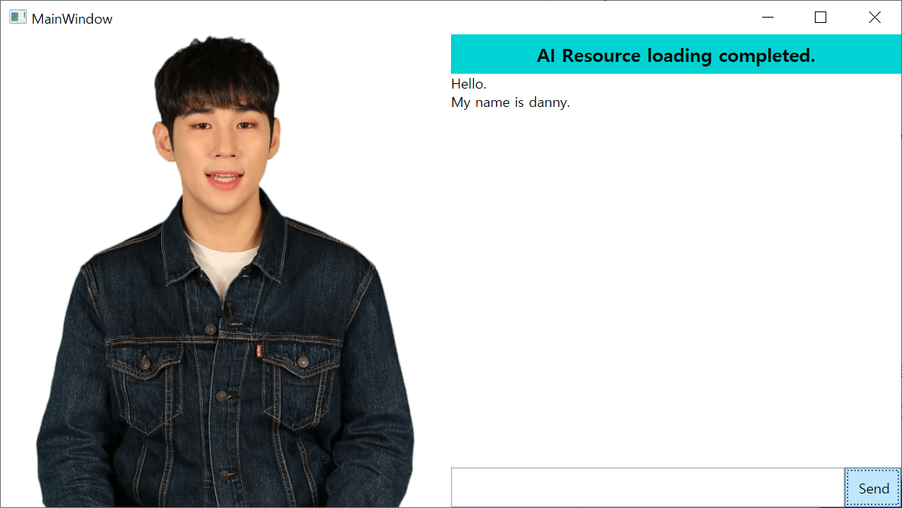

Project Set up
1. Create a New Project in Visual Studio(2019).
: Create New Project > WPF Application > Target Framework > .NET 5.0
WpfApp1 is the default when creating a project.
2. Project Setup
Perform the initial setup of the project.
2-1. Download the SDK for Windows from the AI Human SDK website.
2-2. Move the downloaded SDK and related files to the previously created project path.
2-3. In Solution Explorer, right-click Project > Right-click > Add > Create a new folder with a name.
You can configure the libraries referenced in the solution through the created folder > right-click > Add > Existing item.

2-4. Add the downloaded AIHuman SDK library to the solution item.
In Solution Explorer, right-click on "project" at the top > Add > Project Reference > Reference Manager > Browse > Add AIHumanSDK.dll and Newtonsoft.Json.dll. You will then be able to see that AIHuman SDK is registered in Dependencies > Assembly in the project tree.


3. Add Layout Component(parent layout) to which AIPlayer will be added to MainWindow.xaml.


4. Write the code below in App.xaml.cs, MainWindowViewModel.cs, and MainWindow.
- App.xaml.cs
First, you need to authenticate. The userKey can be issued by registering the appId on the AI Human website. (Refer to step 1 of Quick Start)
using AIHuman.Core;
using Newtonsoft.Json;
using System.Windows;
namespace WpfApp1
{
/// <summary>
/// Interaction logic for App.xaml
/// </summary>
public partial class App : Application
{
public App()
{
AIAPI.Instance.AuthStart("your appId", "your userKey", "your uuid", "wnds",
(aiLIst, error) =>
{
if (string.IsNullOrEmpty(error) && aiLIst != null)
{
string jsonStr = aiLIst.Root.ToString();
AIAPI.AIList list = JsonConvert.DeserializeObject<AIAPI.AIList>(jsonStr);
// $"Auth Complete, Avaliable Count: {list.ai.Length}";
}
else
{
MessageBox.Show($"AuthStart: {error}");
}
}
);
}
}
}
- MainWindowViewModel.cs
using AIHuman.Common;
using AIHuman.Common.Base;
using AIHuman.Core;
using AIHuman.Interface;
using AIHuman.Media;
using System;
using System.Collections.ObjectModel;
using System.Windows;
using System.Windows.Threading;
namespace WpfApp1
{
public class MainWindowViewModel : ViewModelBase, IAIPlayerCallback
{
private AIPlayer _aiPlayer;
public AIPlayerView AIPlayerObject
{
get => _aiPlayer.GetObject();
private set => OnPropertyChanged(nameof(AIPlayerObject));
}
private string _status;
public string AIStatusText
{
get => _status;
set
{
_status = value;
OnPropertyChanged(nameof(AIStatusText));
}
}
private string _inputText;
public string InputText
{
get => _inputText;
set
{
_inputText = value;
OnPropertyChanged(nameof(InputText));
}
}
private ObservableCollection<string> _speechList;
public ObservableCollection<string> SpeechList
{
get => _speechList;
private set
{
_speechList = value;
OnPropertyChanged(nameof(SpeechList));
}
}
public RelayCommand SpeakCommand { get; private set; }
public MainWindowViewModel()
{
SpeechList = new ObservableCollection<string>();
_aiPlayer = new AIPlayer(this);
AIPlayerObject = _aiPlayer.GetObject();
SpeakCommand = new RelayCommand(Speak_Command);
}
public void onAIPlayerError(AIError error)
{
Application.Current.Dispatcher.BeginInvoke(DispatcherPriority.Render, new Action(() =>
{
SpeechList.Add(error.getMessage());
AIStatusText = nameof(AIError);
}));
}
public void onAIPlayerResLoadingProgressed(int current, int total)
{
Application.Current.Dispatcher.BeginInvoke(DispatcherPriority.Render, new Action(() =>
{
float progress = ((float)current / (float)total) * 100;
AIStatusText = string.Format("AI Resource Loading... {0}%", (int)progress);
}));
}
public void onAIStateChanged(AIState state)
{
switch (state.state)
{
case AIState.RES_LOAD_COMPLETED:
Application.Current.Dispatcher.BeginInvoke(DispatcherPriority.Render, new Action(() =>
{
AIStatusText = "AI Resource loading completed.";
}));
break;
}
}
private void Speak_Command(object args)
{
if (string.IsNullOrEmpty(InputText) == false)
{
_aiPlayer.Send(new[] { InputText });
SpeechList.Add(InputText);
InputText = string.Empty;
}
}
}
}
- MainWindow.xaml
<Window x:Class="WpfApp1.MainWindow"
xmlns="http://schemas.microsoft.com/winfx/2006/xaml/presentation"
xmlns:x="http://schemas.microsoft.com/winfx/2006/xaml"
xmlns:d="http://schemas.microsoft.com/expression/blend/2008"
xmlns:mc="http://schemas.openxmlformats.org/markup-compatibility/2006"
xmlns:local="clr-namespace:WpfApp1"
d:DataContext="{d:DesignInstance Type=local:MainWindowViewModel}"
mc:Ignorable="d"
Title="MainWindow" Height="450" Width="800">
<Grid>
<Grid.ColumnDefinitions>
<ColumnDefinition/>
<ColumnDefinition/>
</Grid.ColumnDefinitions>
<ContentControl Margin="0" Grid.Column="0" Content="{Binding Path=AIPlayerObject}" Focusable="False" />
<Grid Margin="0" Grid.Column="1">
<Grid.RowDefinitions>
<RowDefinition Height="1*"/>
<RowDefinition Height="10*"/>
<RowDefinition/>
</Grid.RowDefinitions>
<Grid Grid.Row="0">
<Grid.Background>
<SolidColorBrush Color="#00D3D3"/>
</Grid.Background>
<Viewbox>
<TextBlock FontWeight="Bold">
<Label Content="{Binding AIStatusText}" />
</TextBlock>
</Viewbox>
</Grid>
<Grid Grid.Row="1">
<DockPanel>
<ScrollViewer VerticalScrollBarVisibility="Auto" HorizontalScrollBarVisibility="Auto">
<ItemsControl BorderThickness="0" ItemsSource="{Binding SpeechList}" Focusable="False" />
</ScrollViewer>
</DockPanel>
</Grid>
<Grid Grid.Row="2">
<Grid.ColumnDefinitions>
<ColumnDefinition Width="7*"/>
<ColumnDefinition/>
</Grid.ColumnDefinitions>
<TextBox Grid.Column="0" MaxLines="1" FontStretch="UltraExpanded" Text="{Binding InputText}">
</TextBox>
<Button Grid.Column="1" HorizontalAlignment="Stretch" Command="{Binding SpeakCommand}">
<TextBlock Padding="10, 5" Text="Send" />
</Button>
</Grid>
</Grid>
</Grid>
</Window>
- MainWindow.xaml.cs
using System.Windows;
namespace WpfApp1
{
/// <summary>
/// Interaction logic for MainWindow.xaml
/// </summary>
public partial class MainWindow : Window
{
public MainWindow()
{
InitializeComponent();
DataContext = new MainWindowViewModel();
}
}
}
5. Command the AI to speak
- Build Solution > Run > (Loading Resources) > Enter a sentence in the text box at the bottom right > Click the Send button
